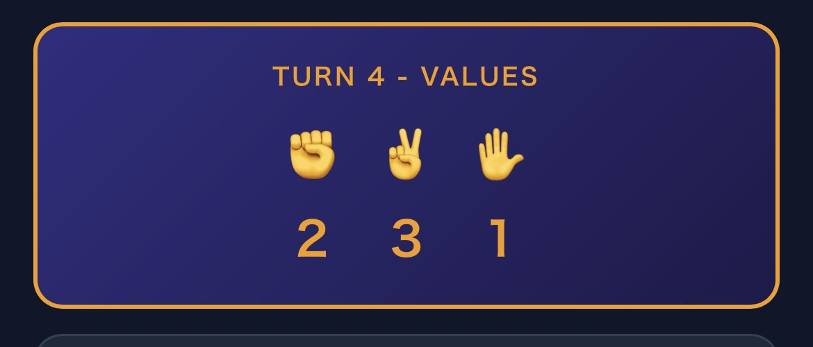
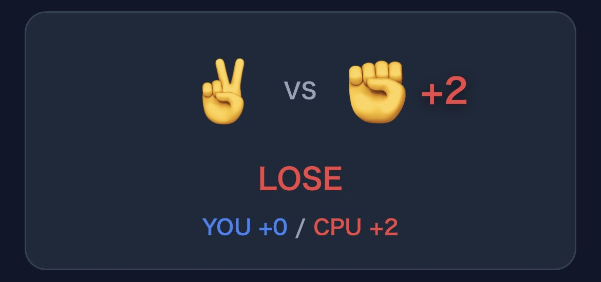
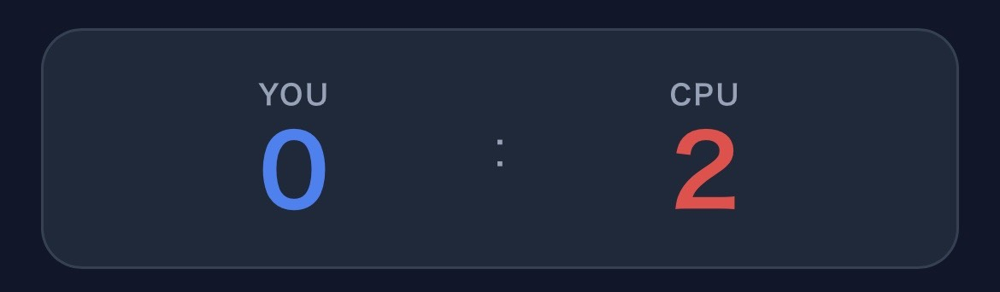

手の価値

- 毎ターン [1, 2, 3] をランダムに各手へ割り当て
- 割り当ては両プレイヤー共通・公開情報
- 6パターンの組み合わせが均等に出現
1. 毎ターン、グー・チョキ・パーに 1〜3 の価値がランダムに割り振られる。
2. 勝てば「自分が出した手の価値」が得点になる。
3. あいこなら両者にその手の価値が加算される。
数字を見て一瞬で判断。高い手を狙うか、安全な手で削るか。相手の思考を読め。



| 出し手 | 勝てば | 負ければ（相手に渡る点） | あいこ |
|---|---|---|---|
| ✊ グー (1) | +1 | 相手に ✋パー(3) | 両者+1 |
| ✌️ チョキ (2) | +2 | 相手に ✊グー(1) | 両者+2 |
| ✋ パー (3) | +3 | 相手に ✌️チョキ(2) | 両者+3 |
→ チョキが「安全な高得点手」。だが両者チョキ読みで+2ずつ積み上がる。裏をかいてグーを出すか？
| 対戦モデル | Firebase Realtime Databaseによるリアルタイム1:1対戦。ルームコード6桁で即マッチング。 |
|---|---|
| マッチング | ルーム作成 → コード/QR/URL共有 → 相手が参加 → 自動開始。 |
| 公平性 | ターンごとの数値割り当てはルーム作成時に全30ターン分を事前生成。両者同一。 |
| 進行管理 | ホストレス設計。両者提出完了で自動解決。切断時はconnectedフラグで検知。 |